近代物理學 - 氫原子的量子理論 (Modern Physics - Quantum Theory of the Hydrogen Atom)#
日期: 2026.04.21, 2026.04.28
閱讀與計算約定
【假設】 說明模型及忽略的效應；【已知】 是前章結果、實驗資料或直接引用的定理；【定義】 固定本節的符號。各類編號在節內使用，跨節引用時附節號。
推導保留「列式 → 代入 → 化簡 → 結果」的順序。等號表示在已列假設下成立的關係；近似、數值四捨五入與數量級估算以 \(\approx\) 或 \(\sim\) 區分。
代入前統一單位：\(1\ \mathrm{eV}=1.602176634\times10^{-19}\ \mathrm{J}\)。指數、對數及三角函數的引數須為無因次；結果另檢查量綱、正負號及適用範圍。
本章模型與符號
以非相對論、單電子、真空庫侖位能為主，先固定原子核並忽略自旋與精細結構；核運動可在相對座標方程中以縮減質量修正。6.10 另加入弱外磁場及軌道磁矩。
符號 |
意義與單位 |
|---|---|
\(m,e\) |
電子質量 \([\mathrm{kg}]\)、基本電荷大小 \([\mathrm{C}]\)；電子電荷為 \(-e\) |
\(\Psi,\psi\) |
含時波函數、空間波函數；三維歸一化後單位為 \([\mathrm{m}^{-3/2}]\) |
\(R,\Theta,\Phi\) |
徑向、天頂角、方位角因子；\(\Phi\) 不等於含時波函數 \(\Psi\) |
\(n,l,m_l\) |
主、軌道、磁量子數，均無因次；\(m_l\) 與質量 \(m\) 不同 |
\(L,L_z\) |
角動量大小與選定軸的投影，單位 \([\mathrm{J\,s}]\) |
\(E,U\) |
能量、位能，採相同零點；本章束縛態取 \(E<0\) |
6.1 氫原子的薛丁格方程式 (Schrödinger’s Equation for the Hydrogen Atom)#
上半學期我們從普朗克、愛因斯坦、波耳一路鋪陳到 薛丁格方程式，把它建立成量子力學的基本假設，其地位等同於古典力學中的牛頓運動定律。第五章舉的例子——無限深位能井、有限深位能井、諧振子、穿隧效應——全部都是人為 (artificial) 製造出來的位能，靠元件製程或磊晶才做得出來。
那麼宇宙中最自然的位能是什麼？是庫侖作用力的位能。所有物質、所有基本組成單元，原子內部與原子之間，靠的都是庫侖作用力。因此本章開始，我們把量子力學的架構用在真實的物理世界上，而最簡單的真實系統就是氫原子：一個正電荷、一個負電荷。
本章要做的事情用白話講只有一句：把薛丁格方程式的位能項換成庫侖位能，然後硬解這個微分方程式。解完之後你會發現，高中化學背過的主量子數、角動量量子數、磁量子數，以及 \(1s\)、\(2s\)、\(2p\) 這些軌域，全部都只是這條微分方程式的解。
出發點的兩條式子#
三維穩態薛丁格方程式（卡氏座標）：
\(\Psi\) : 電子的定態波函數 (Steady-state wave function)，\([\text{m}^{-3/2}]\)
\(m\) : 電子質量 (Electron mass)，\([\text{kg}]\)，\(m \approx 9.11 \times 10^{-31} \ \text{kg}\)
\(E\) : 電子總能量 (Total energy)，\([\text{J}]\)
\(U\) : 位能 (Potential energy)，\([\text{J}]\)
\(\hbar\) : 約化普朗克常數 (Reduced Planck constant)，\([\text{J}\cdot\text{s}]\)，\(\hbar \approx 1.054 \times 10^{-34} \ \text{J}\cdot\text{s}\)
氫原子的庫侖位能：
\(e\) : 基本電荷 (Elementary charge)，\([\text{C}]\)，\(e \approx 1.602 \times 10^{-19} \ \text{C}\)
\(\varepsilon_0\) : 真空電容率 (Vacuum permittivity)，\([\text{F}\cdot\text{m}^{-1}]\)，\(\varepsilon_0 \approx 8.854 \times 10^{-12} \ \text{F}\cdot\text{m}^{-1}\)
\(r\) : 電子與原子核的距離 (Electron–nucleus separation)，\([\text{m}]\)
註：\(\varepsilon_0\) 只適用於真空。若把原子放進固體或水中，介電常數要改成介質的 \(\varepsilon\)。
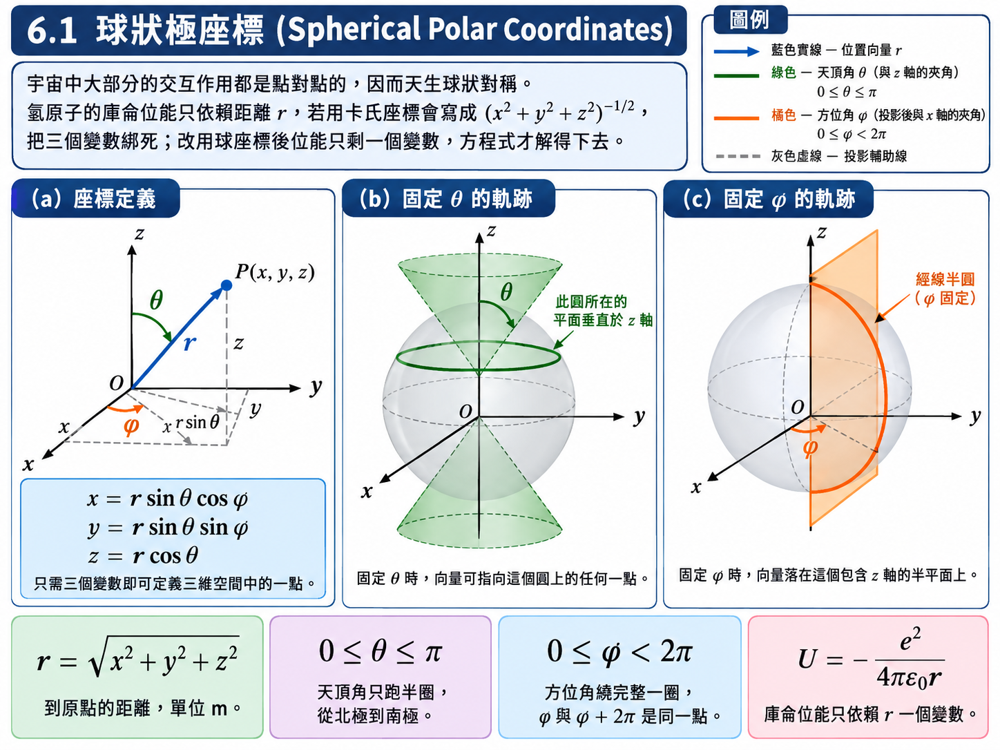
為什麼不能用卡氏座標硬解#
把 \((6.2)\) 直接代進 \((6.1)\)，首先要處理座標選擇：微分以 \(x,y,z\) 表示，位能卻只依賴兩電荷的距離。若把原子核置於原點，距離為
於是位能項為 \(-e^2/\!\left(4\pi\varepsilon_0\sqrt{x^2+y^2+z^2}\right)\)。它不能直接寫成三個單一座標位能的和，因此不適合採用卡氏座標的簡單乘積分離；改用球座標可直接利用中心力的對稱性。
卡氏座標雖然是數學上最容易拓展的座標系（從一維加上 \(y\)、\(z\) 就變三維），卻不是最自然的座標系。宇宙中絕大部分的東西——原子、星體——都是球狀對稱的，因為它們的交互作用都是點對點的：萬有引力如此，庫侖力也如此。既然位能只依賴一個變數 \(r\)，就應該換一組能讓 \(r\) 單獨現身的座標。
假設與已知 (Assumptions & Preliminaries)#
【已知 1】 薛丁格方程式：穩態型式 (Schrödinger’s Equation: Steady-State Form)： 適用前提為位能不隨時間改變（定態）；下式是把 \(-\dfrac{\hbar^2}{2m}\nabla^2\Psi + U\Psi = E\Psi\) 整體乘上 \(-\dfrac{2m}{\hbar^2}\) 的結果，目的是讓微分項前面的係數變成 \(1\)，比較好解。
\[\frac{\partial^2 \Psi}{\partial x^2} + \frac{\partial^2 \Psi}{\partial y^2} + \frac{\partial^2 \Psi}{\partial z^2} + \frac{2m}{\hbar^2}\left( E - U \right)\Psi = 0\]\(\Psi\) : 定態波函數 (Steady-state wave function)，\([\text{m}^{-3/2}]\)
\(E\) : 總能量 (Total energy)，\([\text{J}]\)
\(U\) : 位能 (Potential energy)，\([\text{J}]\)
\(m\) : 電子質量 (Electron mass)，\([\text{kg}]\)
\(\hbar\) : 約化普朗克常數 (Reduced Planck constant)，\([\text{J}\cdot\text{s}]\)
【已知 2】 庫侖位能 (Coulomb potential energy)： 電荷 \(+e\) 的原子核與電荷 \(-e\) 的電子之間的靜電位能。
\[U = -\frac{e^2}{4\pi\varepsilon_0 r}\]\(U\) : 位能 (Potential energy)，\([\text{J}]\)
\(r\) : 兩電荷間距 (Separation)，\([\text{m}]\)
負號代表束縛：把電子從 \(r\) 移到無窮遠需要外界作功。
【已知 3】 球座標的拉普拉斯算子 (Laplacian in spherical coordinates)： 適用於任意可微純量場，未假設任何對稱性；\(r, \theta, \phi\) 的定義如【定義 1】。
\[\nabla^2 \Psi = \frac{1}{r^2}\frac{\partial}{\partial r}\left[ r^2 \frac{\partial \Psi}{\partial r} \right] + \frac{1}{r^2 \sin\theta}\frac{\partial}{\partial \theta}\left[ \sin\theta \frac{\partial \Psi}{\partial \theta} \right] + \frac{1}{r^2 \sin^2\theta}\frac{\partial^2 \Psi}{\partial \phi^2}\]\(r\) : 到原點的距離 (Radial distance)，\([\text{m}]\)
\(\theta\) : 天頂角 (Polar angle)，與 \(z\) 軸的夾角，\([\text{rad}]\)，\(0 \le \theta \le \pi\)
\(\phi\) : 方位角 (Azimuthal angle)，在 \(xy\) 平面上與 \(x\) 軸的夾角，\([\text{rad}]\)，\(0 \le \phi < 2\pi\)
【定義 1】 球狀極座標 (Spherical polar coordinates)： 三維空間中任一點，改用「到原點的距離、與 \(z\) 軸的夾角、投影到 \(xy\) 平面後與 \(x\) 軸的夾角」來標定。
\[\begin{split}\begin{gather*} x &\overset{\text{def}}{=}& r\sin\theta\cos\phi \\ y &\overset{\text{def}}{=}& r\sin\theta\sin\phi \\ z &\overset{\text{def}}{=}& r\cos\theta \end{gather*}\end{split}\]註：只需要三個變數即可定義三維空間中的一點。定義了與 \(z\) 軸的夾角 \(\theta\) 與投影後與 \(x\) 軸的夾角 \(\phi\) 之後，與 \(y\) 軸的夾角就自動被決定了，不需要第四個變數。
推導#
把【已知 1】的卡氏拉普拉斯算子換成【已知 3】的球座標形式：
接著代入【已知 2】的位能，並整體乘上 \(r^2\sin^2\theta\)。乘這一項的目的很單純：讓每一個微分項裡只留下自己的變數，\(\theta\) 的項最好只有 \(\theta\)、\(\phi\) 的項最好只有 \(\phi\)，為下一節的變數分離鋪路。
\(\Psi = \Psi(r, \theta, \phi)\) : 氫原子中電子的定態波函數，\([\text{m}^{-3/2}]\)
觀察 \((6.4)\)：第三項只含 \(\phi\)、第二項只含 \(\theta\)、第一項與第四項含 \(r\) 但還帶著 \(\sin^2\theta\)。目標已經達成了一大半。
【物理知識回顧】 換座標本身不會讓方程式變簡單——\((6.3)\) 看起來比 \((6.1)\) 醜多了。真正變簡單的是位能項：從 \(\left( x^2+y^2+z^2 \right)^{-1/2}\) 這個把三個變數綁死的東西，變成乾淨的 \(1/r\)。整章能不能解得下去，就靠這一步。這也解釋了為什麼「最容易處理的座標系」與「最自然的座標系」是兩回事：卡氏座標對數學拓展最方便，球座標對球狀對稱的物理最方便。
6.2 變數分離 (Separation of Variables)#
\((6.4)\) 是一條含三個變數的偏微分方程式。只要不是一維世界，物理問題幾乎都是偏微分方程式，而偏微分方程式若想用手（而不是電腦）解出解析解，基本上只有一招：變數分離法 (Separation of variables)。它的精神是：想辦法把一條含三個變數的偏微分方程式，拆成三條各自只含一個變數的全微分方程式。
假設與已知 (Assumptions & Preliminaries)#
【已知 1】 \((6.4)\) 式： 上一節的結果，此處直接引用。
\[\sin^2\theta\frac{\partial}{\partial r}\left[ r^2 \frac{\partial \Psi}{\partial r} \right] + \sin\theta\frac{\partial}{\partial \theta}\left[ \sin\theta \frac{\partial \Psi}{\partial \theta} \right] + \frac{\partial^2 \Psi}{\partial \phi^2} + \frac{2mr^2\sin^2\theta}{\hbar^2}\left( \frac{e^2}{4\pi\varepsilon_0 r} + E \right)\Psi = 0\]【假設 1】 三個座標互相獨立 (Independence of the coordinates)： \(r\)、\(\theta\)、\(\phi\) 就像卡氏座標的 \(x\)、\(y\)、\(z\) 一樣是獨立變數：\(r\) 怎麼變動，跟 \(\phi\) 取在哪個角度完全沒有關係。既然座標本身互相獨立，就可以合理地假設波函數也能拆成三個各自獨立的函數相乘，中間不會出現 \(r^\theta\)、\(\theta/\phi\) 這類混合項。
\[\Psi\left( r, \theta, \phi \right) \overset{\text{def}}{=} R\left( r \right)\Theta\left( \theta \right)\Phi\left( \phi \right) \tag{6.5}\]\(R(r)\) : 徑向函數 (Radial function)，只依賴 \(r\)
\(\Theta(\theta)\) : 天頂角函數 (Polar function)，只依賴 \(\theta\)
\(\Phi(\phi)\) : 方位角函數 (Azimuthal function)，只依賴 \(\phi\)
【假設 2】 方程式對全空間逐點成立 (Pointwise validity over all space)： 解出來的波函數不是只在某一點成立，而是必須在空間中的每一點\(\left( r, \theta, \phi \right)\)都滿足方程式。其可用的數學後果是：若一個只依賴 \(A\) 的函數恆等於一個只依賴 \(B\) 的函數，而 \(A\)、\(B\) 互相獨立，則兩者只能同時等於同一個常數。這是後面兩次「左右各等於常數」論證的唯一依據。
\[f\left( A \right) = g\left( B \right) \ \ \text{對所有 } \left( A, B \right) \text{ 成立} \qquad \Longrightarrow \qquad f\left( A \right) = g\left( B \right) = C\]\(A, B\) : 兩組互相獨立的變數 (Two mutually independent sets of variables)
\(f, g\) : 分別只依賴 \(A\) 與只依賴 \(B\) 的函數 (Functions of \(A\) only and of \(B\) only)
\(C\) : 分離常數 (Separation constant)，\([\text{無單位}]\)
【推導 1】 偏微分改寫為全微分 (Rewriting partial derivatives as total derivatives)： 由【假設 1】，對某一個變數微分時，另外兩個函數與該變數無關，可以直接提到微分之外；提出去之後括號內只剩單變數函數，其偏微分與全微分意義完全相同。
(a) 對 \(r\)：
\[\begin{split}\begin{gather*} \frac{\partial \Psi}{\partial r} &\overset{\text{假設 1}}{=}& \frac{\partial}{\partial r}\left[ R\Theta\Phi \right] \\ &\overset{\text{假設 1}}{=}& \Theta\Phi\frac{\partial R}{\partial r} \\ &=& \Theta\Phi\frac{dR}{dr} \end{gather*}\end{split}\](b) 對 \(\theta\)：
\[\begin{split}\begin{gather*} \frac{\partial \Psi}{\partial \theta} &\overset{\text{假設 1}}{=}& \frac{\partial}{\partial \theta}\left[ R\Theta\Phi \right] \\ &\overset{\text{假設 1}}{=}& R\Phi\frac{\partial \Theta}{\partial \theta} \\ &=& R\Phi\frac{d\Theta}{d\theta} \end{gather*}\end{split}\](c) 對 \(\phi\)：
\[\begin{split}\begin{gather*} \frac{\partial^2 \Psi}{\partial \phi^2} &\overset{\text{假設 1}}{=}& \frac{\partial^2}{\partial \phi^2}\left[ R\Theta\Phi \right] \\ &\overset{\text{假設 1}}{=}& R\Theta\frac{\partial^2 \Phi}{\partial \phi^2} \\ &=& R\Theta\frac{d^2 \Phi}{d\phi^2} \end{gather*}\end{split}\]
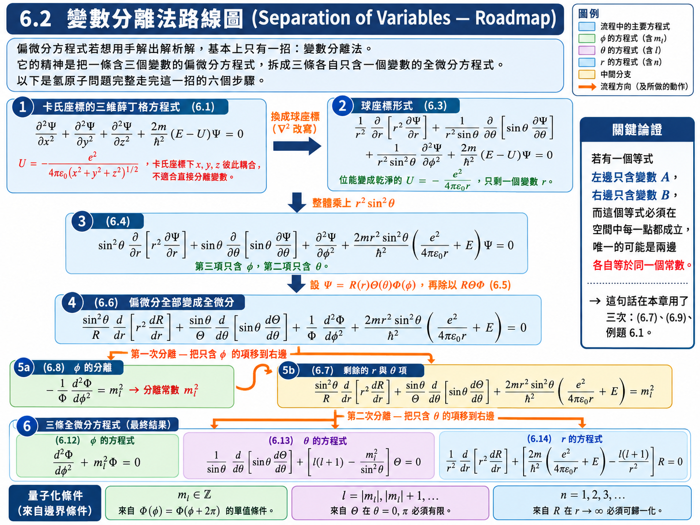
本節計算目標： 先把偏導數改寫為各自單變數函數的導數，再分離 \(\phi\)，最後分離 \(\theta\) 與 \(r\)。分離常數的允許值留到 6.3 用邊界條件決定；本節先不假設其整數性。
推導：第一步 —— 拆成三個函數相乘#
把【推導 1】代進【已知 1】，再整體除以 \(\Psi = R\Theta\Phi\)。除的目的是把每一項的分母湊成「只剩自己那一個函數」：
至此第一件事情已經完成：原本的偏微分項全部變成了全微分項。做完變數分離不會改變階數——原本是二階，現在還是二階，只是偏微分變成了全微分。
推導：第二步 —— 第一次分離（\(\phi\)）#
\((6.6)\) 中最容易獨立出來的是第三項，它只含 \(\Phi\) 與 \(\phi\)。把它移到等號右邊：
現在等號左邊只是 \(r\) 與 \(\theta\) 的函數，等號右邊只是 \(\phi\) 的函數。由【假設 2】，這個等號必須在空間中的每一點都成立。若左邊真的隨 \(r\) 或 \(\theta\) 變動，我固定 \(\phi\) 只動 \(r\)，右邊紋風不動而左邊變了，等號立刻破裂；反之亦然。因此唯一的可能是：等號兩邊各自等於同一個常數。
這個常數可以隨便取名叫 \(C\)，但因為我們預先知道它最後會是某個整數的平方，這裡直接把它寫成 \(m_l^2\)（此刻尚未主張 \(m_l\) 是整數，它只是一個待定常數）：
\(m_l\) : 第一個分離常數 (First separation constant)，\([\text{無單位}]\)，待定
推導：第三步 —— 第二次分離（\(\theta\) 與 \(r\)）#
\((6.7)\) 的左邊同樣等於 \(m_l^2\)。現在對左邊再玩一次同樣的把戲：有 \(\theta\) 的搬一邊，有 \(r\) 的搬另一邊。觀察到第一項與第三項都帶著 \(\sin^2\theta\)，於是整體除以 \(\sin^2\theta\)：
把含 \(\theta\) 的項全部移到右邊、含 \(r\) 的項全部留在左邊：
注意這裡位能項可以整批留在左邊，因為庫侖力是中心力 (central force)，位能只跟距離 \(r\) 有關、跟角度完全無關。
同樣的論證再用一次：左邊只含 \(r\)、右邊只含 \(\theta\)，兩邊必須各自等於同一個常數。這個常數同樣可以取名叫 \(C\)，但我們預先把它寫成 \(l\left( l+1 \right)\)（此刻也尚未主張 \(l\) 是整數）：
\(l\) : 第二個分離常數 (Second separation constant)，\([\text{無單位}]\)，待定
三條全微分方程式#
把 \((6.8)\)、\((6.10)\)、\((6.11)\) 各自整理成標準形式：
\(\Phi\) 的方程式： 把 \((6.8)\) 兩邊乘上 \(-\Phi\)。
\(\Theta\) 的方程式： 把 \((6.10)\) 兩邊乘上 \(\Theta\) 並移項。
\(R\) 的方程式： 把 \((6.11)\) 兩邊乘上 \(\dfrac{R}{r^2}\) 並移項。
一條三變數的偏微分方程式，就這樣被拆成三條各自只含一個變數的全微分方程式。看起來一條變三條，但這三條至少是可解的。
【物理知識回顧】 兩次分離常數的論證，用的其實是同一句話：「一個只依賴 A 的東西恆等於一個只依賴 B 的東西，則兩者都只能是常數。」 這句話在整章會反覆出現——\(6.3\) 的例題 6.1、\(6.5\) 的角動量推導，都是它的變形。之所以能這樣講，關鍵在【假設 2】：解出來的波函數必須對全空間每一點都成立，而不是只在某一點碰巧相等。
6.3 量子數 (Quantum Numbers)#
把 \((6.12)\)、\((6.13)\)、\((6.14)\) 排在一起看，會發現一件關鍵的事：這三條全部都是本徵方程式 (eigen equation)。
以最容易看出來的 \((6.12)\) 為例，把它移項成
左邊是一個算符作用在 \(\Phi\) 上，右邊是某個數字乘上原來的函數——這就是本徵方程式的定義。\((6.13)\) 把 \(l(l+1)\Theta\) 移到另一邊、\((6.14)\) 把含 \(E\) 的項移到另一邊，同樣都是「算符作用在函數上等於某個數字乘上該函數」的形式。
在本章的束縛態問題中，本徵方程式還必須滿足單值性、原點附近的正則性與可歸一化條件。這些條件共同限制允許的本徵值，才得到離散的量子數與能階。本徵方程式本身不保證譜一定離散；游離態仍可具有連續的能量。
對氫原子的中心力問題，球座標中的變數分離給出三條方程；配合各自的邊界條件，得到 \(n,l,m_l\) 三個量子數。這是本系統可分離結構與對稱性的結果，不是「空間幾維就一定有幾個量子數」的通則。電子自旋是額外的內部自由度，本章的純空間薛丁格方程式尚未納入。
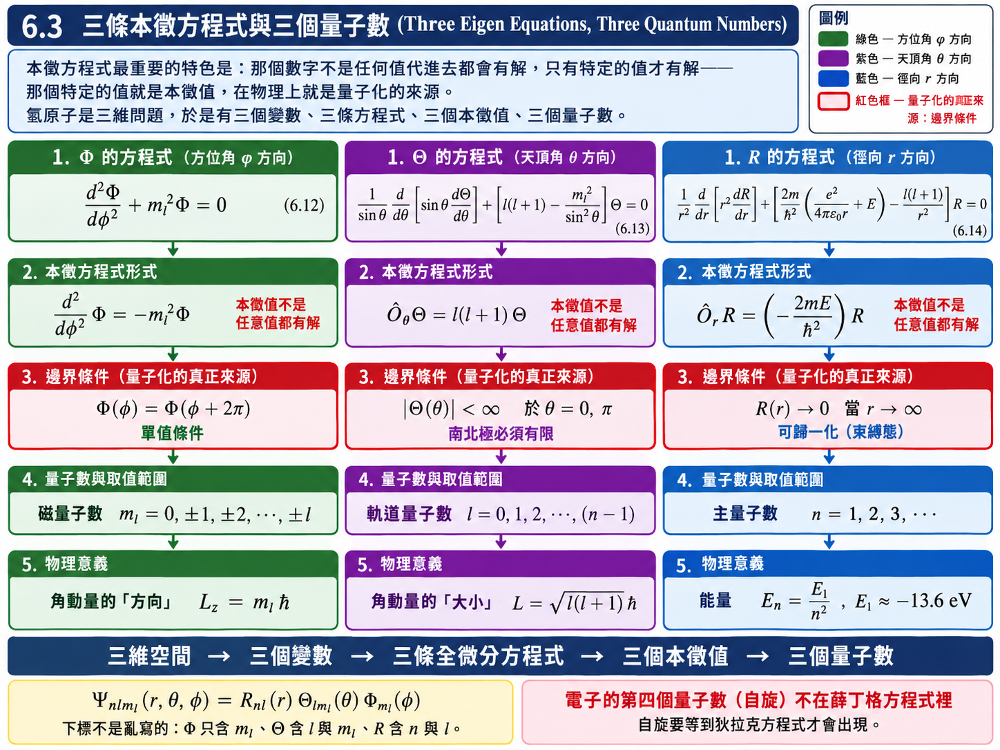
假設與已知 (Assumptions & Preliminaries)#
【已知 1】 \((6.12)\)、\((6.13)\)、\((6.14)\) 三條全微分方程式： 上一節變數分離的結果，此處直接引用。
\[\begin{split}\begin{gather*} \frac{d^2 \Phi}{d\phi^2} + m_l^2 \Phi &=& 0 \\ \frac{1}{\sin\theta}\frac{d}{d\theta}\left[ \sin\theta \frac{d\Theta}{d\theta} \right] + \left[ l\left( l+1 \right) - \frac{m_l^2}{\sin^2\theta} \right]\Theta &=& 0 \\ \frac{1}{r^2}\frac{d}{dr}\left[ r^2 \frac{dR}{dr} \right] + \left[ \frac{2m}{\hbar^2}\left( \frac{e^2}{4\pi\varepsilon_0 r} + E \right) - \frac{l\left( l+1 \right)}{r^2} \right]R &=& 0 \end{gather*}\end{split}\]【假設 1】 波函數為單值函數 (Single-valued wave function)： 這是第五章對波函數的基本要求——在同一個位置，波函數只能有一個值。在極座標中，\(\phi\) 與 \(\phi + 2\pi\) 代表同一個位置，故
\[\Phi\left( \phi \right) = \Phi\left( \phi + 2\pi \right)\]【假設 2】 束縛態 (Bound state)： 電子被原子核束縛住，故總能量為負，且波函數在無窮遠處必須趨近於零（可歸一化）。
\[\begin{split}\begin{gather*} E &<& 0 \\ \lim_{r \to \infty}R\left( r \right) &=& 0 \end{gather*}\end{split}\]【已知 2】 連帶勒讓德方程式的量子化條件 (Quantization of the associated Legendre equation)： 適用前提為方程式具有下方 (a) 的形式、階數 \(m\) 為整數，且要求解在 \(\theta = 0, \pi\)（南北極）為有限值；此時分離常數與階數被鎖成下列整數關係。
\[\lambda = l\left( l+1 \right), \qquad l \in \left\{ |m|, |m|+1, |m|+2, \dots \right\}\]\(\lambda\) : 分離常數 (Separation constant)，\([\text{無單位}]\)
\(m\) : 階數，須為整數 (Integer order)，\([\text{無單位}]\)
\(l\) : 量子化後的階數 (Quantized degree)，非負整數，\([\text{無單位}]\)
\(\Theta(\theta)\) : 天頂角方向的解 (Polar-angle solution)，\([\text{無單位}]\)
(a) 適用的方程式形式：
\[\frac{1}{\sin\theta}\frac{d}{d\theta}\left[ \sin\theta \frac{d\Theta}{d\theta} \right] + \left[ \lambda - \frac{m^2}{\sin^2\theta} \right]\Theta = 0\]【已知 3】 連帶拉蓋爾方程式的截斷條件 (Truncation of the associated Laguerre equation)： 適用前提為方程式具有下方 (a) 的形式、\(p > -1\)，且要求完整解 \(e^{-\rho/2}\rho^{\alpha}v\left( \rho \right)\) 在 \(\rho \to \infty\) 趨近於零（可歸一化）；此時本徵值被鎖成非負整數。
\[q = 0, 1, 2, \dots\]\(\rho\) : 無因次徑向變數 (Dimensionless radial variable)，\([\text{無單位}]\)
\(p\) : 階參數 (Order parameter)，\([\text{無單位}]\)，\(p > -1\)
\(q\) : 本徵值，須為非負整數 (Non-negative integer eigenvalue)，\([\text{無單位}]\)
\(v(\rho)\) : 剝離兩端漸近行為後剩下的餘因子 (Residual factor)，\([\text{無單位}]\)
\(\alpha\) : 剝離原點附近奇異行為所得的冪次 (Exponent at the origin)，\([\text{無單位}]\)，有限
(a) 適用的方程式形式：
\[\rho\frac{d^2v}{d\rho^2} + \left( p + 1 - \rho \right)\frac{dv}{d\rho} + q\,v = 0\]【定義 2】 徑向方程式的無因次化參數 (Dimensionless parameters of the radial equation)： 把徑向方程式中帶單位的距離與能量，換成三個沒有單位的量：\(\alpha\) 是束縛態波函數往外衰減的快慢，\(\rho\) 是以 \(1/2\alpha\) 為尺度量出的距離，\(\lambda_n\) 則把能量藏進一個純數字裡。
\[\begin{split}\begin{gather*} \alpha &\overset{\text{def}}{=}& \left( -\frac{2mE}{\hbar^2} \right)^{1/2} \\ \rho &\overset{\text{def}}{=}& 2\alpha r \\ \lambda_n &\overset{\text{def}}{=}& \frac{me^2}{4\pi\varepsilon_0 \hbar^2 \alpha} \end{gather*}\end{split}\]\(\alpha\) : 束縛態的空間衰減率 (Decay rate)，\([\text{m}^{-1}]\)；由【假設 2】\(E<0\) 保證根號內為正
\(\rho\) : 無因次徑向座標 (Dimensionless radial coordinate)，\([\text{無單位}]\)
\(\lambda_n\) : 無因次能量參數 (Dimensionless energy parameter)，\([\text{無單位}]\)
【推導 1】 徑向方程式的無因次化 (Non-dimensionalization of the radial equation)： 把【定義 2】逐項代入【已知 1】的第三條式子。
(a) 座標與微分算子的換算：
\[\begin{split}\begin{gather*} r &\overset{\text{定義 2}}{=}& \frac{\rho}{2\alpha} \\ \frac{d}{dr} &=& 2\alpha\frac{d}{d\rho} \end{gather*}\end{split}\](b) 微分項：
\[\begin{split}\begin{gather*} r^2 \frac{dR}{dr} &\overset{\text{推導 1(a)}}{=}& \frac{\rho^2}{4\alpha^2}\cdot 2\alpha\frac{dR}{d\rho} \\ &=& \frac{\rho^2}{2\alpha}\frac{dR}{d\rho} \end{gather*}\end{split}\]\[\begin{split}\begin{gather*} \frac{1}{r^2}\frac{d}{dr}\left[ r^2 \frac{dR}{dr} \right] &\overset{\text{推導 1(a)(b)}}{=}& \frac{4\alpha^2}{\rho^2}\cdot 2\alpha\frac{d}{d\rho}\left[ \frac{\rho^2}{2\alpha}\frac{dR}{d\rho} \right] \\ &=& \frac{4\alpha^2}{\rho^2}\frac{d}{d\rho}\left[ \rho^2 \frac{dR}{d\rho} \right] \end{gather*}\end{split}\](c) 能量項：
\[\begin{gather*} \frac{2mE}{\hbar^2} &\overset{\text{定義 2}}{=}& -\alpha^2 \end{gather*}\](d) 位能項：
\[\begin{split}\begin{gather*} \frac{2m}{\hbar^2}\frac{e^2}{4\pi\varepsilon_0 r} &\overset{\text{推導 1(a)}}{=}& \frac{2me^2}{4\pi\varepsilon_0\hbar^2}\cdot\frac{2\alpha}{\rho} \\ &=& \frac{4\alpha^2}{\rho}\cdot\frac{me^2}{4\pi\varepsilon_0\hbar^2\alpha} \\ &\overset{\text{定義 2}}{=}& \frac{4\alpha^2 \lambda_n}{\rho} \end{gather*}\end{split}\](e) 離心項：
\[\begin{gather*} \frac{l\left( l+1 \right)}{r^2} &\overset{\text{推導 1(a)}}{=}& \frac{4\alpha^2 l\left( l+1 \right)}{\rho^2} \end{gather*}\](f) 把 (b)–(e) 代回並整體除以 \(4\alpha^2\)：
\[\frac{1}{\rho^2}\frac{d}{d\rho}\left[ \rho^2 \frac{dR}{d\rho} \right] + \left[ -\frac{1}{4} + \frac{\lambda_n}{\rho} - \frac{l\left( l+1 \right)}{\rho^2} \right]R = 0\]【推導 2】 剝離徑向解的漸近行為 (Peeling off the asymptotic behavior of the radial solution)： \(\rho \to 0\) 時離心項主導，解如 \(\rho^{l}\)；\(\rho \to \infty\) 時常數項 \(-\frac14\) 主導，解如 \(e^{-\rho/2}\)。先把這兩個因子提出來。
(a) 設定：
\[R\left( \rho \right) \overset{\text{def}}{=} \rho^{l}e^{-\rho/2}v\left( \rho \right) = f\left( \rho \right)v\left( \rho \right), \qquad f\left( \rho \right) \overset{\text{def}}{=} \rho^{l}e^{-\rho/2}\](b) \(f\) 的對數導數：
\[\begin{split}\begin{gather*} \frac{f'}{f} &\overset{\text{推導 2(a)}}{=}& \frac{d}{d\rho}\left[ l\ln\rho - \frac{\rho}{2} \right] \\ &=& \frac{l}{\rho} - \frac{1}{2} \end{gather*}\end{split}\](c) \(f\) 的二階導數比：
\[\begin{split}\begin{gather*} \frac{f''}{f} &=& \left( \frac{f'}{f} \right)' + \left( \frac{f'}{f} \right)^2 \\ &\overset{\text{推導 2(b)}}{=}& -\frac{l}{\rho^2} + \frac{l^2}{\rho^2} - \frac{l}{\rho} + \frac{1}{4} \end{gather*}\end{split}\]
(a) solve 方位角方程式 \(\to\) 磁量子數 \(m_l\)#
\((6.12)\) 是三條裡最簡單的一條。它是二階常係數微分方程式，且 \(\Phi\) 與其二階導數差一個負號，解自然是指數形式（微分兩次拉下兩個 \(i\)，恰好給出負號）：
\(A\) : 歸一化常數 (Normalization constant)，\([\text{無單位}]\)
驗證：\(\dfrac{d^2\Phi}{d\phi^2} = \left( im_l \right)^2 Ae^{im_l\phi} = -m_l^2\Phi\)，代回 \((6.12)\) 確實為零。
到目前為止 \(m_l\) 仍只是一個常數。它之所以必須是整數，來自【假設 1】的單值條件：
這就是第一個量子數——磁量子數 \(m_l\)，它可正可負，但必須是整數。
(b) solve 天頂角方程式 \(\to\) 軌道量子數 \(l\)#
\((6.13)\) 正是【已知 2】所處理的方程式，其中 \(\lambda = l(l+1)\)、\(m = m_l\)。由 (a) 已知 \(m_l\) 為整數，滿足【已知 2】的前提，故直接引用其結論：
\(l\) 必為非負整數，且不得小於 \(|m_l|\)。把這個不等式反過來讀——對固定的 \(l\)，磁量子數只能取
這就是第二個量子數——軌道量子數 \(l\)。
(c) solve 徑向方程式 \(\to\) 主量子數 \(n\)#
把【推導 2(a)】的 \(R = fv\) 代入【推導 1(f)】。先把該式展開成不含外層括號的形式：
代入 \(R = fv\) 並整體除以 \(f\)：
一階項的係數：
零階項的係數：
代回並整體乘上 \(\rho\)：
這正是【已知 3】的連帶拉蓋爾方程式，對應關係為 \(p + 1 = 2l+2\)（即 \(p = 2l+1\)）、\(q = \lambda_n - l - 1\)。由【假設 2】的可歸一化條件，直接引用【已知 3】：
令
則 \(n\) 必為正整數，且
最後把 \(\lambda_n = n\) 代回【定義 2】求出能量：
\(E_n\) : 第 \(n\) 能階的電子能量 (Energy of the \(n\)-th level)，\([\text{J}]\)，\([\text{eV}]\)
\(E_1\) : 基態能量 (Ground-state energy)，\([\text{eV}]\)，\(E_1 \approx -13.6 \ \text{eV}\)
\(n\) : 主量子數 (Principal quantum number)，正整數，\([\text{無單位}]\)
這就是第三個量子數——主量子數 \(n\)。
表 6.1 氫原子的正規化波函數（\(n = 1, 2, 3\)）#
完整波函數為三個函數相乘：\(\psi_{n l m_l} = R_{n l}\left( r \right)\Theta_{l m_l}\left( \theta \right)\Phi_{m_l}\left( \phi \right)\)。下標不是亂寫的——\(\Phi\) 的方程式只含 \(m_l\)、\(\Theta\) 的方程式含 \(l\) 與 \(m_l\)、\(R\) 的方程式含 \(n\) 與 \(l\)。
徑向函數 \(R_{nl}(r)\)：
\(n\) |
\(l\) |
\(R_{nl}(r)\) |
|---|---|---|
1 |
0 |
\(\dfrac{2}{a_0^{3/2}}e^{-r/a_0}\) |
2 |
0 |
\(\dfrac{1}{\left( 2a_0 \right)^{3/2}}\left( 2 - \dfrac{r}{a_0} \right)e^{-r/2a_0}\) |
2 |
1 |
\(\dfrac{1}{\sqrt{3}\left( 2a_0 \right)^{3/2}}\dfrac{r}{a_0}e^{-r/2a_0}\) |
3 |
0 |
\(\dfrac{2}{\left( 3a_0 \right)^{3/2}}\left( 1 - \dfrac{2r}{3a_0} + \dfrac{2r^2}{27a_0^2} \right)e^{-r/3a_0}\) |
3 |
1 |
\(\dfrac{4\sqrt{2}}{9\left( 3a_0 \right)^{3/2}}\dfrac{r}{a_0}\left( 1 - \dfrac{r}{6a_0} \right)e^{-r/3a_0}\) |
3 |
2 |
\(\dfrac{2\sqrt{2}}{27\sqrt{5}\left( 3a_0 \right)^{3/2}}\dfrac{r^2}{a_0^2}e^{-r/3a_0}\) |
天頂角函數 \(\Theta_{l m_l}(\theta)\)：
\(l\) |
\(m_l\) |
\(\Theta_{l m_l}(\theta)\) |
|---|---|---|
0 |
0 |
\(\dfrac{1}{\sqrt{2}}\) |
1 |
0 |
\(\dfrac{\sqrt{6}}{2}\cos\theta\) |
1 |
\(\pm 1\) |
\(\dfrac{\sqrt{3}}{2}\sin\theta\) |
2 |
0 |
\(\dfrac{\sqrt{10}}{4}\left( 3\cos^2\theta - 1 \right)\) |
2 |
\(\pm 1\) |
\(\dfrac{\sqrt{15}}{2}\sin\theta\cos\theta\) |
2 |
\(\pm 2\) |
\(\dfrac{\sqrt{15}}{4}\sin^2\theta\) |
方位角函數 \(\Phi_{m_l}(\phi)\)：
完整波函數範例：
\(a_0\) : 波耳半徑 (Bohr radius)，\([\text{m}]\)，\(a_0 \approx 5.292 \times 10^{-11} \ \text{m}\)
例題 6.1：由 \(1s\) 徑向波函數反求 \(a_0\) 與 \(E_1\)#
題目： 把對應到 \(n = 1\)、\(l = 0\) 的徑向波函數 \(R\) 代入式 \((6.14)\) 中，求出波耳半徑 \(a_0\) 與基態電子能量 \(E_1\)。
解答：
這一題把邏輯倒過來走：假設波函數已經查表查到了，不解微分方程式，直接代回去反求常數。
由表 6.1，\(n=1\)、\(l=0\) 的徑向波函數為
先算出 \((6.14)\) 需要的微分項：
代入 \((6.14)\)，令 \(E = E_1\)、\(l = 0\)（離心項消失），並整體除以 \(e^{-r/a_0}\)：
這個式子必須對空間中的每一個 \(r\) 都成立——不論 \(r\) 是 \(0\)、是 \(1\)、還是無窮遠。左邊第一個括號與 \(r\) 無關，第二個括號前面帶著 \(1/r\)，兩者要對所有 \(r\) 都相加為零，唯一的可能是兩個括號各自等於零。
由第二個括號為零求 \(a_0\)：
由第一個括號為零求 \(E_1\)：
與 \((6.16)\) 在 \(n = 1\) 的結果完全一致。
【物理知識回顧】 這裡求出來的 \(a_0\)，正是第四章波耳原子裡那個用假設得到的波耳半徑。差別在於：波耳當年必須先假設「電子軌道上要形成駐波」才能推出量子化；而這裡在固定原子核、庫侖位能及可接受波函數等前提下，由薛丁格方程式求得 \(a_0\) 與 \(E_1\)，不需另加波耳的軌道量子化假設。與已知能階吻合，是這個模型的重要檢查。
另外要注意這一題用到的技巧——「一個式子若要對所有 \(r\) 成立，各個 \(r\) 冪次的係數必須分別為零」——與 \(6.2\) 的分離常數論證是同一件事的變形。這個 trick 在本章會出現第三次（\(6.5\) 推導角動量時）。
6.4 主量子數 (Principal Quantum Number)#
三個量子數之中，主量子數 \(n\) 的物理意義最直接：它直接對應電子的能量。
\(E_n\) : 第 \(n\) 能階的電子能量 (Energy of the \(n\)-th level)，\([\text{eV}]\)
\(n\) : 主量子數 (Principal quantum number)，\(n = 1, 2, 3, \dots\)，\([\text{無單位}]\)
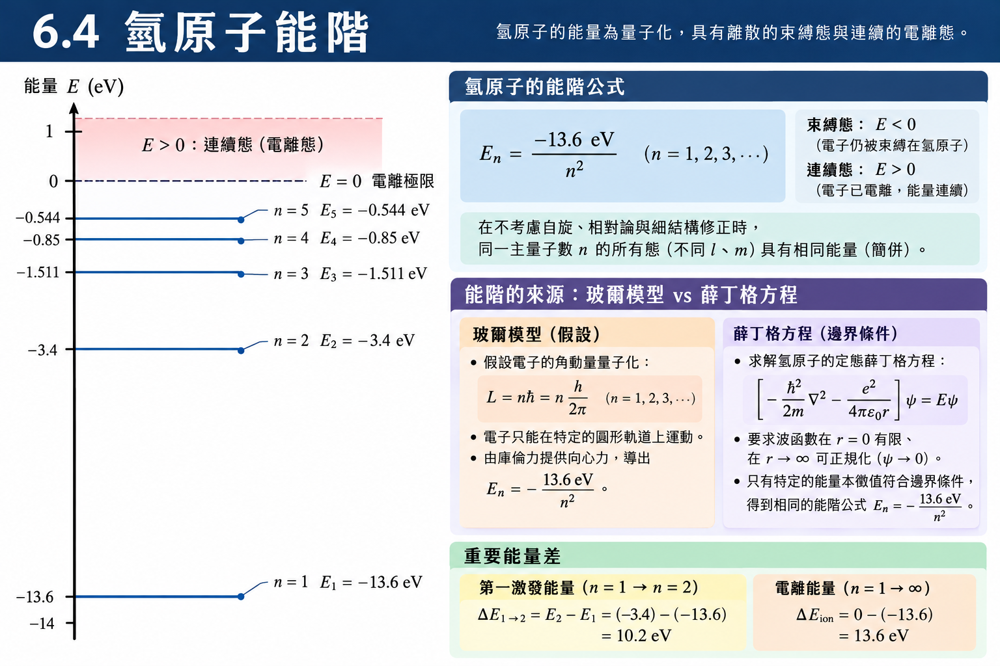
為什麼能量必須是負的#
古典上，總能量可以是任何值。但若把行星永遠捕陷在太陽系中，這個能量當然為負值——因為要把它移到無窮遠必須由外界作功。氫原子完全相同：電子能量若為正，對應的是游離態 (ionized state)，電子已經逃離原子核；只有負值的能量才對應到被束縛在原子內的電子。這就是【假設 2】中 \(E < 0\) 的物理內容。
於是氫原子中電子能量的量子化，可以完全用主量子數 \(n\) 來表示。\(n = 1\) 是基態 \(-13.6 \ \text{eV}\)，\(n = 2\) 是 \(-3.4 \ \text{eV}\)，\(n \to \infty\) 時 \(E_n \to 0\)，能階愈靠愈密，最後接到 \(E > 0\) 的游離連續區。
【進階探討：這裡的量子化與波耳的量子化差在哪裡？】
第四章的波耳模型也得到 \(E_n = E_1/n^2\)，數值完全一樣。但兩者的知識論地位天差地遠：
波耳：先假設電子軌道上必須形成駐波（\(2\pi r = n\lambda\)），量子化是被人為塞進去的前提。
薛丁格：什麼都沒假設。只是把庫侖位能代進一條微分方程式，然後老老實實地解。量子化是「級數若不截斷，波函數就會在邊界發散」這個純數學要求的後果。
因此，本章束縛態的量子化來自本徵方程式與物理邊界條件的共同限制。三條分離方程分別限制 \(m_l\)、\(l\)、\(n\)；只有同時滿足條件的組合才是可接受的氫原子束縛態。
6.5 軌道量子數 (Orbital Quantum Number)#
第二個量子數 \(l\) 來自 \(\Theta\) 的方程式，直覺上應該跟「軌道」有關。但它同時也出現在 \(R\) 的方程式 \((6.14)\) 裡——這件事給了我們一個關鍵的線索。
假設與已知 (Assumptions & Preliminaries)#
【已知 1】 \((6.14)\) 徑向方程式： \(6.2\) 的結果，此處直接引用。
\[\frac{1}{r^2}\frac{d}{dr}\left[ r^2 \frac{dR}{dr} \right] + \left[ \frac{2m}{\hbar^2}\left( \frac{e^2}{4\pi\varepsilon_0 r} + E \right) - \frac{l\left( l+1 \right)}{r^2} \right]R = 0\]【已知 2】 能量守恆 (Conservation of energy)： 總能量等於動能加位能。
\[E = KE + U\]\(KE\) : 動能 (Kinetic energy)，\([\text{J}]\)
\(U\) : 位能 (Potential energy)，\([\text{J}]\)
【已知 3】 庫侖位能 (Coulomb potential energy)： 即 \((6.2)\)。
\[U = -\frac{e^2}{4\pi\varepsilon_0 r}\]【假設 1】 動能可分解為徑向與切向 (Decomposition of the kinetic energy)： 電子的運動可以分成沿半徑方向與沿軌道切線方向兩個互相垂直的分量，兩者的動能相加即為總動能。
\[KE = KE_{\text{radial}} + KE_{\text{orbital}}\]\(KE_{\text{radial}}\) : 徑向動能 (Radial kinetic energy)，\([\text{J}]\)
\(KE_{\text{orbital}}\) : 軌道（切向）動能 (Orbital kinetic energy)，\([\text{J}]\)
【假設 2】 徑向運動與軌道運動互相獨立 (Independence of radial and orbital motion)： 就像卡氏座標中 \(x\) 方向的運動與 \(y\)、\(z\) 無關一樣，徑向運動不受角度方向的影響，因此 \(R\) 的方程式只能跟 \(r\) 有關——凡是帶有非徑向資訊的項都必須互相抵消。
\[\frac{\partial \left[ KE_{\text{radial}} \right]}{\partial \theta} = \frac{\partial \left[ KE_{\text{radial}} \right]}{\partial \phi} = 0\]\(KE_{\text{radial}}\) : 徑向動能 (Radial kinetic energy)，\([\text{J}]\)
\(\theta, \phi\) : 兩個角度座標 (Angular coordinates)，\([\text{rad}]\)
【已知 4】 古典角動量 (Classical angular momentum)： 只有切線方向的速度分量對角動量有貢獻，徑向速度不貢獻角動量。
\[L = m v_{\text{orbital}} r\]\(L\) : 角動量大小 (Angular momentum magnitude)，\([\text{J}\cdot\text{s}]\)
\(v_{\text{orbital}}\) : 切線方向速度 (Tangential speed)，\([\text{m}\cdot\text{s}^{-1}]\)
\(r\) : 軌道半徑 (Orbital radius)，\([\text{m}]\)
【已知 5】 古典動能 (Classical kinetic energy)： 質量 \(m\)、速率 \(v\) 的物體所具有的動能；這裡只取繞核切線方向的速度分量，得到軌道運動那一部分的動能。
\[KE_{\text{orbital}} = \frac{1}{2}m v_{\text{orbital}}^2\]
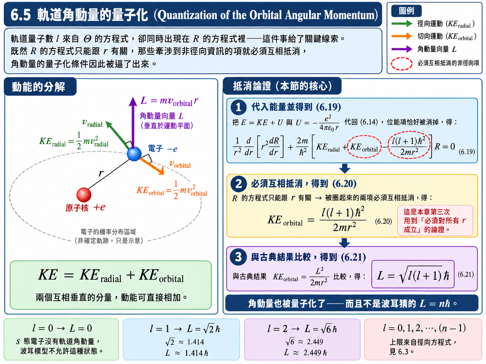
推導：把總能量拆開代回 \((6.14)\)#
把【已知 2】、【已知 3】、【假設 1】合起來：
位能項恰好被消掉了。 把這個結果代回【已知 1】：
推導：軌道動能的量子化#
\((6.19)\) 是 \(R\) 的方程式，由【假設 2】它只能跟 \(r\) 有關。方括號裡的三項中，\(KE_{\text{radial}}\) 本來就只跟徑向運動有關；剩下的 \(KE_{\text{orbital}}\) 與離心項 \(\dfrac{l(l+1)\hbar^2}{2mr^2}\) 都牽涉到非徑向的資訊，它們不應該留在一條純徑向的方程式裡。唯一的可能是這兩項互相抵消：
再把古典關係代進來：
兩式相等，比較左右：
\(L\) : 電子軌道角動量的大小 (Magnitude of the orbital angular momentum)，\([\text{J}\cdot\text{s}]\)
\(l\) : 軌道量子數／角動量量子數 (Orbital / angular-momentum quantum number)，\([\text{無單位}]\)
角動量也被量子化了。 到這裡才有資格把 \(l\) 改口叫「角動量量子數」——在此之前我們只知道它跟軌道有關，並不知道角動量一定會量子化。
值得注意的是，量子化的條件並不是波耳猜的 \(L = n\hbar\)，而是 \(L = \sqrt{l(l+1)}\hbar\)。特別是 \(l = 0\) 時 \(L = 0\)，這在波耳模型中是不可能出現的（電子不繞行怎麼會有軌道？），但在量子力學中完全合法——\(s\) 態的電子確實沒有軌道角動量。
表 6.2 原子的電子態#
歷史上光譜學給不同的 \(l\) 取了字母代號，這套代號一路沿用到今天的化學：
\(l\) |
0 |
1 |
2 |
3 |
4 |
5 |
|---|---|---|---|---|---|---|
代號 |
\(s\) |
\(p\) |
\(d\) |
\(f\) |
\(g\) |
\(h\) |
配合 \((6.18)\) 的 \(l \le n-1\)，電子態的完整組合為：
\(n\) |
可能的 \(l\) |
電子態 |
|---|---|---|
1 |
0 |
\(1s\) |
2 |
0, 1 |
\(2s\)、\(2p\) |
3 |
0, 1, 2 |
\(3s\)、\(3p\)、\(3d\) |
4 |
0, 1, 2, 3 |
\(4s\)、\(4p\)、\(4d\)、\(4f\) |
【物理知識回顧】 高中化學背的 \(1s\)、\(2s\)、\(2p\)、\(3d\) 這些軌域，其實就是氫原子薛丁格方程式的解：\(n\) 是主量子數、字母是 \(l\) 的代號。化學課上這些是要背的規則，而在這裡它們是解微分方程式的必然後果——\(l \le n-1\) 不是規定，是連帶拉蓋爾多項式次數不能為負的改寫。
6.6 磁量子數 (Magnetic Quantum Number)#
第三個量子數 \(m_l\) 的物理意義最微妙：\(l\) 決定了角動量的大小，而 \(m_l\) 決定了角動量的方向。
假設與已知 (Assumptions & Preliminaries)#
【已知 1】 動量算符 (Momentum operator)： 適用於任一直角座標方向；三維時三個分量各自成立。算符作用在波函數上，即可把該方向的動量從波函數中萃取出來。
\[\hat{p}_x = -i\hbar\frac{\partial}{\partial x}\]\(\hat{p}_x\) : \(x\) 方向的動量算符 (Momentum operator)，\([\text{kg}\cdot\text{m}\cdot\text{s}^{-1}]\)
\(i\) : 虛數單位 (Imaginary unit)，滿足 \(i^2 = -1\)，\([\text{無單位}]\)
【已知 2】 古典角動量的 \(z\) 分量 (Classical \(z\)-component of the angular momentum)： 角動量 \(\vec{r}\times\vec{p}\) 投影到 \(z\) 軸，只牽涉 \(xy\) 平面上的位置與動量；若 \(\vec{L}\) 完全沿著 \(z\) 軸，粒子就被限制在 \(xy\) 平面內運動。
\[L_z = \left( \vec{r}\times\vec{p} \right)_z = x p_y - y p_x\]\(L_z\) : 角動量在 \(z\) 軸上的分量 (z-component of the angular momentum)，\([\text{J}\cdot\text{s}]\)
【已知 3】 測不準原理 (Uncertainty principle)： 適用於任一對共軛變數（位置與其同方向的動量分量）；等號只在高斯波包時取得，一般情形恆為大於。
\[\Delta z \, \Delta p_z \ge \frac{\hbar}{2}\]\(\Delta z\) : 位置測不準度 (Position uncertainty)，\([\text{m}]\)
\(\Delta p_z\) : 動量測不準度 (Momentum uncertainty)，\([\text{kg}\cdot\text{m}\cdot\text{s}^{-1}]\)
【推導 1】 \(\partial/\partial\phi\) 的卡氏展開 (Cartesian expansion of the azimuthal derivative)： 由 \(6.1\)【定義 1】的座標變換直接套鏈鎖律；注意 \(z = r\cos\theta\) 完全不含 \(\phi\)。
\[\begin{split}\begin{gather*} \frac{\partial}{\partial \phi} &=& \frac{\partial x}{\partial \phi}\frac{\partial}{\partial x} + \frac{\partial y}{\partial \phi}\frac{\partial}{\partial y} + \frac{\partial z}{\partial \phi}\frac{\partial}{\partial z} \\ &=& -r\sin\theta\sin\phi\frac{\partial}{\partial x} + r\sin\theta\cos\phi\frac{\partial}{\partial y} + 0 \\ &=& -y\frac{\partial}{\partial x} + x\frac{\partial}{\partial y} \end{gather*}\end{split}\]
推導：空間量子化#
把【已知 2】的古典角動量改寫成算符，代入【已知 1】：
把這個算符作用在完整波函數上，並用 \((6.5)\) 與 \((6.15)\)：
波函數本身就是 \(\hat{L}_z\) 的本徵函數，本徵值為
\(L_z\) : 角動量在 \(z\) 軸上的投影 (Projection onto the z-axis)，\([\text{J}\cdot\text{s}]\)
\(m_l\) : 磁量子數 (Magnetic quantum number)，\([\text{無單位}]\)
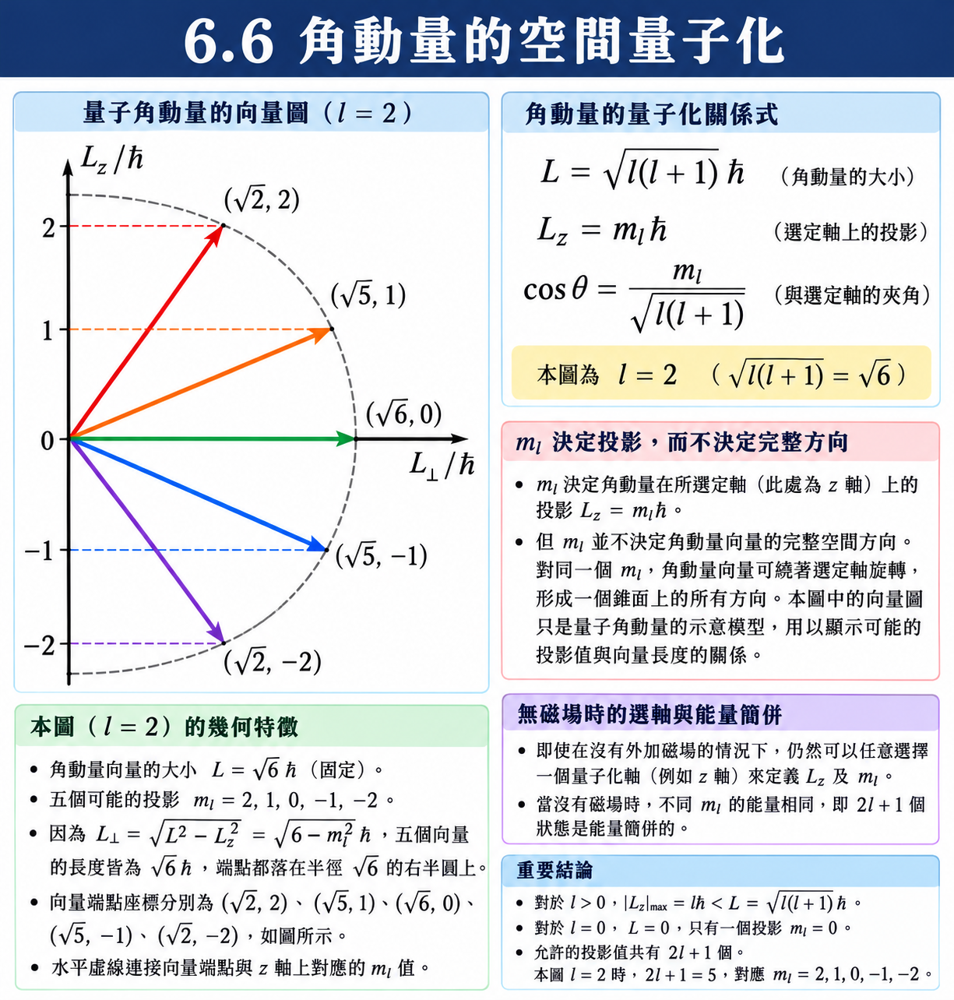
空間量子化的圖像#
由 \((6.21)\)，角動量的大小是 \(L = \sqrt{l(l+1)}\hbar\)，這只決定了向量的長度；向量可以指向以 \(z\) 軸為中心的任何一個圓錐面。但由 \((6.22)\)，它在 \(z\) 軸上的投影必須是 \(\hbar\) 的整數倍——於是方向被鎖死在有限個離散的圓錐上。這就是空間量子化 (Space quantization)。
以 \(l = 2\) 為例：
而 \(m_l\) 只能取 \(0, \pm1, \pm2\)，故 \(L_z\) 只能是 \(0, \pm\hbar, \pm2\hbar\)——總共五個允許的方向。
因此角動量的量子化其實包含兩件事：\(l\) 定義它的大小，\(m_l\) 定義它的方向。
測不準原理與空間量子化#
【已知】 在 \(L^2,L_z\) 的共同本徵態中，\(L^2=l(l+1)\hbar^2\)、\(L_z=m_l\hbar\)。對 \(l\ge1\)，有
圓錐圖像可用來表示「大小」與「投影」的關係，但不代表電子沿某一古典圓軌道運動。更直接的計算是
即使 \(|m_l|=l\)，上式仍為 \(l\hbar^2\)，橫向分量的平方平均並不為零。在此共同本徵態中 \(\langle L_x\rangle=\langle L_y\rangle=0\)，但「平均為零」不等於「沒有不確定性」。這與角動量分量的非對易關係一致。\(l=0\) 時總角動量為零，不應再替零向量指定方向。
【進階探討：沒有磁場的時候，\(m_l\) 有物理意義嗎？】
有，但必須先指定量子化軸。 沒有外場時空間沒有優先方向，我們仍可選擇一個 \(z\) 軸，以 \(m_l\) 標記 \(L_z\) 的本徵值；不同軸對應不同基底。能量對 \(m_l\) 簡併，不代表 \(m_l\) 沒有物理意義。
也因此，\((6.16)\) 算出來的能量完全不含 \(m_l\)：不同 \(m_l\) 的態能量完全相同（簡併）。
加上磁場後，磁場方向提供自然的量子化軸，不同 \(m_l\) 態取得不同的磁能，原有簡併可被打破。這是 6.10 塞曼效應的出發點。
6.7 電子機率密度 (Electron Probability Density)#
在波耳模型中，電子沿著半徑確定的圓形軌道繞行。在量子力學中，沒有明確的軌道——我們能講的只有「在某處找到電子的機率」。
\(\left| \Psi \right|^2\) : 機率密度 (Probability density)，\([\text{m}^{-3}]\)
其中方位角部分的機率密度是常數：
與 \(\phi\) 完全無關，代表電子的機率分布必定對 \(z\) 軸旋轉對稱。
假設與已知 (Assumptions & Preliminaries)#
【已知 1】 球座標的體積元素 (Volume element in spherical coordinates)： 三個邊長分別為徑向的 \(dr\)、沿 \(\theta\) 圓弧的 \(r\,d\theta\)、沿 \(\phi\) 圓弧的 \(r\sin\theta\,d\phi\)——最後一項的半徑是投影到 \(xy\) 平面後的 \(r\sin\theta\)，不是 \(r\)，這是最容易寫錯的地方。
\[dV = \left( dr \right)\left( r \, d\theta \right)\left( r\sin\theta \, d\phi \right) = r^2 \sin\theta \, dr \, d\theta \, d\phi \tag{6.24}\]\(dV\) : 體積元素 (Volume element)，\([\text{m}^3]\)
\(dr, d\theta, d\phi\) : 三個座標各自的微小增量 (Coordinate increments)
【已知 2】 機率密度與歸一化 (Probability density and normalization)： 適用於已歸一化的波函數，積分範圍為全空間；其物理內容是「粒子必然存在於空間中的某處」，故總機率為 \(100\%\)。
\[\int \left| \Psi \right|^2 dV = 1\]【假設 1】 角向部分已歸一化 (Normalized angular parts)： 表 6.1 給出的 \(\Theta\) 與 \(\Phi\) 皆已歸一化。
\[\begin{split}\begin{gather*} \int_{0}^{\pi}\left| \Theta \right|^2 \sin\theta \, d\theta &=& 1 \\ \int_{0}^{2\pi}\left| \Phi \right|^2 d\phi &=& 1 \end{gather*}\end{split}\]
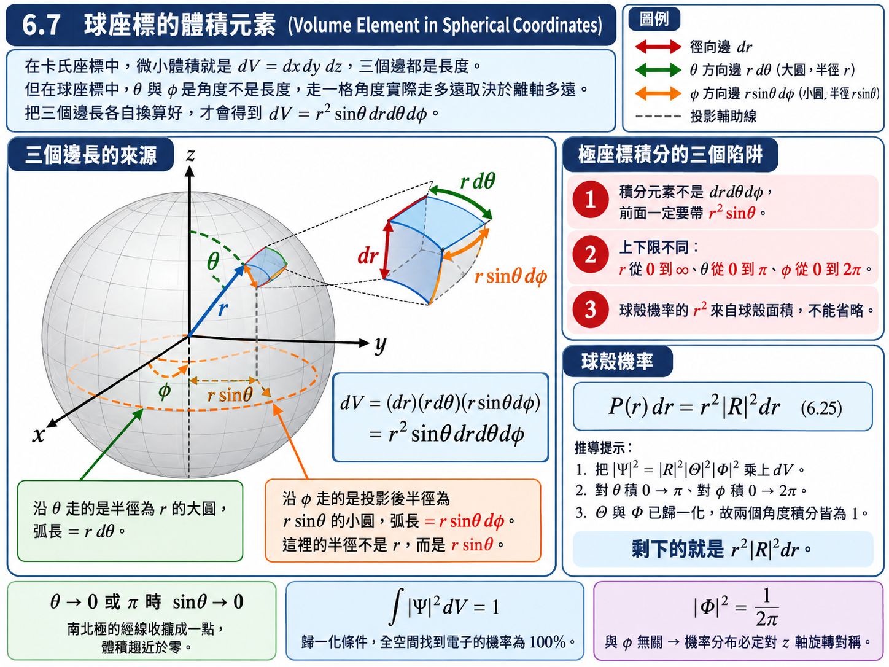
推導：球殼機率#
我們最常問的問題是：在半徑 \(r\) 到 \(r+dr\) 的球殼中找到電子的機率是多少？ 這需要把角度部分積掉：
\(P(r)\,dr\) : 在 \(r\) 與 \(r+dr\) 之間的球殼中找到電子的機率 (Radial probability)，\([\text{無單位}]\)
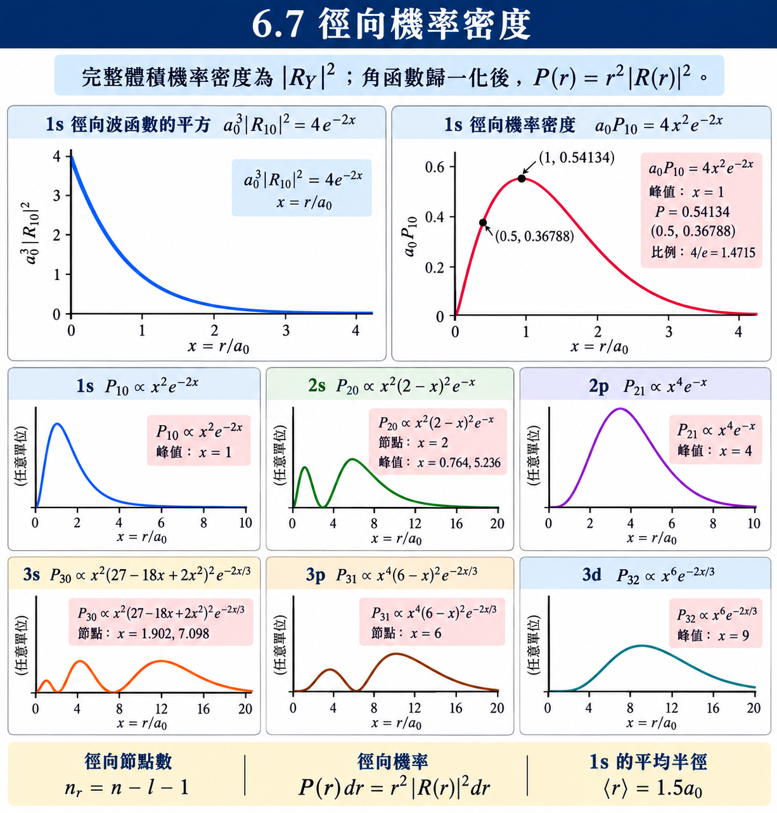
極座標積分的三個陷阱（考試最常錯的地方）：
積分元素不是 \(dr\,d\theta\,d\phi\)，前面一定要帶 \(r^2\sin\theta\)。
上下限不是都從 \(0\) 到 \(\infty\)：\(r\) 是 \(0 \to \infty\)、\(\theta\) 是 \(0 \to \pi\)、\(\phi\) 是 \(0 \to 2\pi\)。
\((6.25)\) 中的 \(r^2\) 是球殼面積帶來的，不能省略。省略了就會算出 \(6.3\) 例題那種錯誤答案。
例題 6.2：\(1s\) 電子的 \(\left\langle 1/r \right\rangle\)#
題目： 證明對氫原子的 \(1s\) 電子而言，\(1/r\) 的平均值為 \(1/a_0\)。
解答：
由表 6.1，\(1s\) 電子的完整波函數為
由【已知 1】的 \(dV = r^2\sin\theta\,dr\,d\theta\,d\phi\)，\(1/r\) 的期望值為
（注意 \(\dfrac{1}{r}\times r^2 = r\)，只剩一次方。）三個積分分別計算：
三者相乘：
【物理知識回顧】 題目問的是 \(\left\langle 1/r \right\rangle = 1/a_0\)，不是 \(\left\langle r \right\rangle = a_0\)。這兩件事並不等價（事實上 \(1s\) 態的 \(\left\langle r \right\rangle = \dfrac{3}{2}a_0\)）。這種「倒數的平均不等於平均的倒數」在量子力學中很常見，讀題時要特別小心。
例題 6.3：\(a_0\) 與 \(a_0/2\) 處的機率比#
題目： 氫原子的 \(1s\) 電子距離原子核為 \(a_0\) 的機率，比距離為 \(a_0/2\) 的機率高幾倍？
解答：
由表 6.1，\(1s\) 電子的徑向波函數為
由 \((6.25)\)，機率密度正比於 \(r^2\left| R \right|^2\)，故機率比為
代入 \(r_1 = a_0\)、\(r_2 = a_0/2\)：
距離原子核為 \(a_0\) 的電子出現機率，比 \(a_0/2\) 處高了約 \(47\%\)。
【物理知識回顧】 這一題最常見的錯誤是只比較 \(\left| R \right|^2\) 而忘記帶 \(r^2\)。若只比 \(\left| R \right|^2\)，會得到 \(\dfrac{e^{-2}}{e^{-1}} = e^{-1} \approx 0.37\)，也就是「\(a_0\) 處的機率反而比較低」——結論完全相反。
原因是：機率跟球殼的面積有關，愈外層的球殼面積愈大，面積正比於 \(r^2\)。\(\left| R \right|^2\) 只是「單位體積的機率密度」，而我們要問的是「整層球殼的機率」，兩者差一個 \(4\pi r^2\)。\(1s\) 態的 \(r^2\left| R \right|^2\) 恰好在 \(r = a_0\) 處取到極大值——電子出現在波耳半徑上的機率是最大的，這正好呼應了波耳模型的圖像，只是量子力學說的是「機率最大」而非「軌道就在那裡」。
6.8 輻射躍遷 (Radiative Transitions)#
到目前為止我們解出了能階，也知道能量是量子化的。但還有一件事沒有交代：電子從某個能階掉到另一個能階時，為什麼會放光？ 能量有差是一回事，為什麼那個能量差會變成電磁輻射，是另一回事。
答案藏在波函數的期望值裡。
假設與已知 (Assumptions & Preliminaries)#
【已知 1】 含時波函數的時間因子 (Time factor of the time-dependent wave function)： 適用前提為該態具有確定能量 \(E_n\)（定態）。此時完整波函數等於與時間無關的空間部分，乘上一個純相位的時間因子——「純相位」意味著 \(\left| \Psi_n \right|^2\) 與時間無關。
\[\Psi_n\left( x, t \right) = \psi_n\left( x \right)e^{-iE_n t/\hbar} \tag{6.26}\]\(\Psi_n\) : 第 \(n\) 態的完整波函數 (Full wave function)
\(\psi_n\) : 第 \(n\) 態與時間無關的空間波函數 (Spatial wave function)
\(E_n\) : 第 \(n\) 態的本徵能量 (Eigen-energy)，\([\text{J}]\)
【已知 2】 期望值 (Expectation value)： 適用於已歸一化的波函數。期望值是大量相同系統重複測量後的平均值，而非單次測量會得到的結果。
\[\left\langle x \right\rangle = \int_{-\infty}^{\infty}\Psi^{*}\,x\,\Psi \, dx\]【已知 3】 尤拉公式的餘弦形式 (Cosine form of Euler’s formula)： 一對互為共軛的複指數相加，虛部互相抵消，只剩一個實數的餘弦振盪；這正是兩態疊加的交叉項會變成可觀測振盪的原因。
\[e^{i\beta} + e^{-i\beta} = 2\cos\beta\]\(\beta\) : 任意實數相位 (Arbitrary real phase)，\([\text{rad}]\)
【已知 4】 電偶極振盪輻射 (Electric dipole radiation)： 古典電磁學結論，適用於任何做簡諧振盪的電偶極（不限於原子）：它輻射出的電磁波頻率恰等於偶極本身的振盪頻率。
\[\nu_{\text{輻射}} = \nu_{\text{振盪}}\]\(\nu_{\text{輻射}}\) : 輻射出的電磁波頻率 (Frequency of the emitted wave)，\([\text{Hz}]\)
\(\nu_{\text{振盪}}\) : 電偶極本身的振盪頻率 (Oscillation frequency of the dipole)，\([\text{Hz}]\)
【假設 1】 電子可存在於兩個態的疊加 (Two-state superposition)： 電子可以在能階 \(n\) 與 \(m\) 之間躍遷，故其波函數為兩者的線性組合。
\[\Psi = a\Psi_n + b\Psi_m \tag{6.28}\]\(a, b\) : 疊加係數 (Superposition coefficients)，\([\text{無單位}]\)，取為實數且滿足 \(a^2 + b^2 = 1\)
物理意義：電子有 \(a^2\) 的機率在 \(n\) 態、\(b^2\) 的機率在 \(m\) 態
【假設 2】 空間波函數為實函數 (Real spatial wave functions)： 為了讓交叉項的結構看得清楚，取 \(\psi_n\)、\(\psi_m\) 為實函數（對氫原子的 \(m_l = 0\) 態成立；一般情形只是多帶一個常數相位，不影響結論）。
\[\psi_n^{*} = \psi_n, \qquad \psi_m^{*} = \psi_m\]
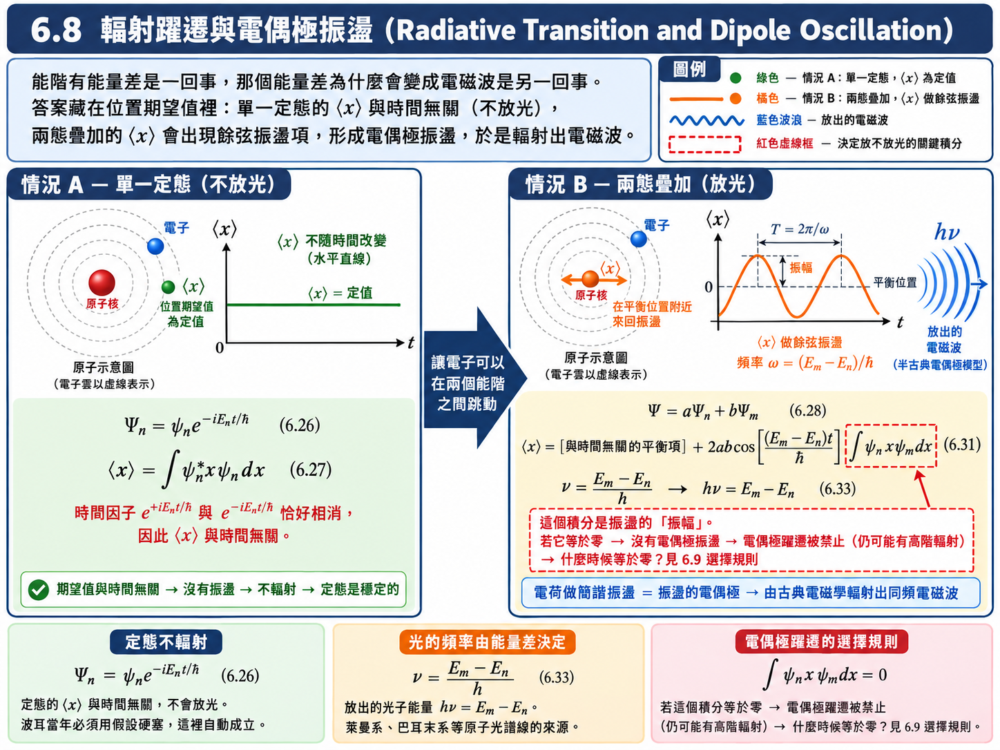
推導：單一定態不會輻射#
先看電子只待在某一個特定能階 \(n\)、完全不在兩個能階之間跳動的情形：
時間因子的正負指數恰好相消，期望值完全與時間無關。 電子的位置期望值固定不動，沒有振盪，也就沒有輻射。這解釋了為什麼原子的定態是穩定的——這正是波耳模型當年必須用假設硬塞進去的「定態不輻射」，在這裡自動成立。
推導：兩態疊加產生電偶極振盪#
現在改用【假設 1】的疊加態：
四項之中，第一項與第四項跟前面的 \((6.27)\) 完全同型，時間因子相消，與時間無關——它們定義了電子的平衡位置（大約就是一個原子的尺度，\(0.5 \ \text{nm}\) 上下）。真正有意思的是中間兩項。把【已知 1】代進去：
（最後一步用到 \(\cos\) 是偶函數，故 \(\cos\left[ \left( E_n-E_m \right)t/\hbar \right] = \cos\left[ \left( E_m-E_n \right)t/\hbar \right]\)。）
於是 \((6.30)\) 可以寫成
電子的位置期望值，在某個平衡位置附近做餘弦振盪。 把振盪項寫成標準形式 \(\cos\left( 2\pi\nu t \right)\)：
\(\nu\) : 振盪頻率 (Oscillation frequency)，\([\text{Hz}]\)
\(h\) : 普朗克常數 (Planck constant)，\([\text{J}\cdot\text{s}]\)，\(h \approx 6.626 \times 10^{-34} \ \text{J}\cdot\text{s}\)
結論：為什麼會放光#
一個電荷在空間中做簡諧振盪，在古典物理中就是一個振盪的電偶極 (oscillating electric dipole)。由【已知 4】，這樣的偶極會輻射出與振盪頻率相同的電磁波。
因此：電子在 \(n\) 與 \(m\) 兩態之間躍遷 \(\to\) 位置期望值出現 \(\cos\left( 2\pi\nu t \right)\) 項 \(\to\) 形成電偶極振盪 \(\to\) 輻射出頻率為 \(\nu\) 的電磁波，而
這就是萊曼系、巴耳末系那些光譜線的來源。 第二章、第四章反覆使用的 \(h\nu = E_i - E_f\)，在這裡終於從波函數本身被推導出來，而不再是一條假設。
【物理知識回顧】 本節採電偶極近似；振盪項前的躍遷矩陣元決定該分量的振幅。若整個向量矩陣元 \(\langle n|\vec r|m\rangle\) 為零，表示此躍遷的電偶極通道被禁止；僅一個 \(x\) 分量為零，尚不能排除其他偏振方向。
躍遷也可能經碰撞等非輻射機制，或經較弱的磁偶極、電四極及多光子通道進行。因此不能將電偶極禁戒直接等同於「不會放光」。下一節討論電偶極矩陣元不為零的必要條件。
6.9 選擇規則 (Selection Rules)#
上一節末尾留下的問題是：躍遷偶極積分
什麼時候不為零？
出乎意料的是，大部分時候它都等於零——不等於零反而是例外。本節要找出這個例外的條件。
假設與已知 (Assumptions & Preliminaries)#
【已知 1】 完整波函數的三因子形式： \(6.3\) 表 6.1 的結果，此處直接引用。
\[\psi_{n l m_l}\left( r, \theta, \phi \right) = R_{nl}\left( r \right)\Theta_{l m_l}\left( \theta \right)\Phi_{m_l}\left( \phi \right), \qquad \Phi_{m_l} = \frac{1}{\sqrt{2\pi}}e^{im_l\phi}\]【已知 2】 偶極算符的球座標分量 (Spherical components of the dipole operator)： 由 \(6.1\)【定義 1】直接讀出。
\[\begin{split}\begin{gather*} z &=& r\cos\theta \\ x &=& r\sin\theta\cos\phi \\ y &=& r\sin\theta\sin\phi \end{gather*}\end{split}\]【已知 3】 連帶勒讓德函數的相鄰階耦合 (Adjacent-order coupling of associated Legendre functions)： 適用前提為兩側必須是同一個 \(m\) 的連帶勒讓德函數；其證明只用到三件事——\(P_l^m\) 的多項式次數結構、帶權正交性、以及宇稱，與量子力學無關。
\[\int_{-1}^{1}P_{l'}^{m}\left( x \right)\,x\,P_{l}^{m}\left( x \right)\,dx \ne 0 \quad \Longrightarrow \quad l' = l \pm 1\]\(P_l^m\) : 連帶勒讓德函數 (Associated Legendre function)，即 \(\Theta_{l m_l}\) 的未歸一化形式，\([\text{無單位}]\)
\(l, l'\) : 兩側函數各自的階數 (Degrees of the two functions)，非負整數，\([\text{無單位}]\)
\(x\) : 積分變數，\(x = \cos\theta\) (Integration variable)，\([\text{無單位}]\)
【假設 1】 空間等向性 (Isotropy of space)： 在沒有外加磁場時，位能只依賴 \(r\)、與角度完全無關，故空間中沒有任何一個方向是特別的，\(z\) 軸的選擇完全任意。\(\vec{r}\) 的三個分量之間只差一個座標軸的轉向，而 \(l\) 是旋轉不變的量子數（角動量的大小不因座標軸選擇而改變）——因此對 \(z\) 分量成立的 \(l\) 限制，對 \(x\)、\(y\) 分量必定同樣成立。
\[U\left( r, \theta, \phi \right) = U\left( r \right) = -\frac{e^2}{4\pi\varepsilon_0 r}\]\(U\) : 庫侖位能 (Coulomb potential energy)，\([\text{J}]\)
\(r, \theta, \phi\) : 球座標三個變數 (Spherical coordinates)
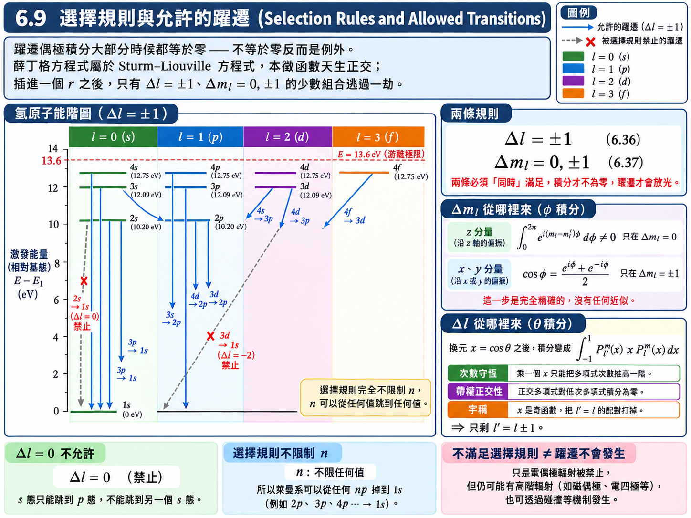
推導：\(m_l\) 的選擇規則#
\((6.34)\) 的三重積分中，\(\phi\) 的部分可以先單獨拆出來。由【已知 1】與【已知 2】，三個分量的 \(\phi\) 積分分別為
(a) \(z\) 分量（\(z = r\cos\theta\)，完全不含 \(\phi\)）：
此積分只在 \(m_l - m_l' = 0\) 時不為零（否則被積函數是完整週期的複數指數，積分恆為零），故
(b) \(x\)、\(y\) 分量（含 \(\cos\phi\) 或 \(\sin\phi\)）：
只在 \(m_l - m_l' \pm 1 = 0\) 時不為零，故
合併 (a)(b)：
推導：\(l\) 的選擇規則#
取 \(z\) 分量為代表。\((6.34)\) 的 \(\theta\) 部分為
（其中的 \(\sin\theta\) 來自體積元素 \((6.24)\)。）換元 \(x = \cos\theta\)，則 \(dx = -\sin\theta\,d\theta\)，積分變成
這正是【已知 3】的積分。直接引用其結論：
至於 \(x\)、\(y\) 兩個分量，由【假設 1】的空間等向性：\(\vec{r}\) 的三個分量只差一個座標軸的轉向，而 \(l\) 是旋轉不變的量子數（角動量的大小不因座標軸選擇而改變）。因此對 \(z\) 分量成立的限制，對 \(x\)、\(y\) 分量必定同樣成立。故對整個偶極算符 \(\vec{r}\)：
選擇規則的意義#
這兩條必須同時滿足，\((6.34)\) 的積分才不為零，躍遷才會放光。
選擇規則完全不限制 \(n\)。因此 \(n\) 可以從任何一個值跳到任何一個值。
\(\Delta l = 0\) 是不允許的：\(l = 0\)（\(s\) 態）只能跳到 \(l = 1\)（\(p\) 態），不能跳到另一個 \(s\) 態；\(l = 1\) 可以跳到 \(l = 0\) 或 \(l = 2\)，但不能跳到 \(l = 1\) 或 \(l = 3\)。
【物理知識回顧】 為什麼「大部分積分都是零」？因為薛丁格方程式在數學上屬於 Sturm–Liouville 方程式，其本徵函數天生彼此正交：若沒有中間那個 \(\vec{r}\)，\(\displaystyle\int\psi_{n'}^{*}\psi_n\,dV\) 對 \(n' \ne n\) 一定等於零。
插進一個 \(\vec{r}\) 之後，對稱性被輕微破壞，於是少數幾組 \(\left( l, l' \right)\) 的組合逃過一劫不再為零——但也只有 \(\Delta l = \pm 1\) 這幾組。所以選擇規則不是什麼「剛好那麼巧」的規定，而是正交性被一個奇函數擾動後的殘留。
這裡的選擇規則只限制電偶極躍遷。不滿足時，此近似下的矩陣元為零；較高階輻射或碰撞等非輻射機制仍可能造成躍遷。滿足選擇規則也不保證所有徑向積分都非零。
6.10 塞曼效應 (Zeeman Effect)#
\(6.6\) 埋下的伏筆終於要收回來了：\(m_l\) 什麼時候才會現身？加了磁場的時候。
假設與已知 (Assumptions & Preliminaries)#
【已知 1】 磁偶極在磁場中的力矩 (Torque on a magnetic dipole)： 古典電磁學結論。
\[\tau = \mu B \sin\theta\]\(\tau\) : 力矩 (Torque)，\([\text{N}\cdot\text{m}]\)
\(\mu\) : 磁偶極矩大小 (Magnetic dipole moment)，\([\text{A}\cdot\text{m}^{2}]\)，\([\text{J}\cdot\text{T}^{-1}]\)
\(B\) : 磁場強度 (Magnetic flux density)，\([\text{T}]\)
\(\theta\) : 磁矩與磁場的夾角 (Angle between \(\vec{\mu}\) and \(\vec{B}\))，\([\text{rad}]\)
【已知 2】 電流迴路的磁矩 (Magnetic moment of a current loop)： 古典電磁學結論。
\[\mu = I A\]\(I\) : 迴路電流 (Loop current)，\([\text{A}]\)
\(A\) : 迴路所圍面積 (Enclosed area)，\([\text{m}^{2}]\)
【已知 3】 電流的定義 (Definition of electric current)： 每秒通過某一點的電荷量。對於一個電荷 \(-e\)、每秒繞行 \(f\) 次的電子：
\[I = -e f\]\(f\) : 繞行頻率 (Orbital frequency)，\([\text{s}^{-1}]\)
負號來自電子帶負電，故電流方向與電子運動方向相反
【已知 4】 圓周運動的古典力學量 (Classical quantities of circular motion)： 質點以半徑 \(r\)、每秒 \(f\) 圈做等速圓周運動時，它的角動量大小與切線速率；兩者都含 \(f\) 與 \(r\)，相除時會一起消掉。
(a) 角動量：
\[L = m v r\](b) 線速度：
\[v = 2\pi f r\]\(L\) : 角動量大小 (Angular momentum magnitude)，\([\text{J}\cdot\text{s}]\)
\(m\) : 電子質量 (Electron mass)，\([\text{kg}]\)
\(v\) : 切線方向速度 (Tangential speed)，\([\text{m}\cdot\text{s}^{-1}]\)
\(r\) : 軌道半徑 (Orbital radius)，\([\text{m}]\)
\(f\) : 繞行頻率 (Orbital frequency)，\([\text{s}^{-1}]\)
【已知 5】 \((6.21)\) 與 \((6.22)\)： \(6.5\) 與 \(6.6\) 的結果，此處直接引用。
\[\begin{split}\begin{gather*} L &=& \sqrt{l\left( l+1 \right)}\,\hbar \\ L_z &=& L\cos\theta = m_l \hbar \end{gather*}\end{split}\]【已知 6】 選擇規則： \(6.9\) 的結果，此處直接引用。
\[\Delta l = \pm 1, \qquad \Delta m_l = 0, \pm 1\]【假設 1】 磁場方向定義 \(z\) 軸 (The field defines the z-axis)： 加了磁場之後空間不再等向，\(z\) 軸自然被定義為磁場的方向。這一步是 \(m_l\) 從「沒有物理意義的標號」變成「可觀測量」的關鍵。
\[\vec{B} = B\,\hat{z}\]\(\vec{B}\) : 外加磁場 (Applied magnetic field)，\([\text{T}]\)
\(B\) : 磁場大小 (Field magnitude)，\([\text{T}]\)
\(\hat{z}\) : \(z\) 軸單位向量 (Unit vector along \(z\))，\([\text{無單位}]\)
【定義 1】 波耳磁子 (Bohr magneton)： 把 \((6.41)\) 中的一串常數整包命名。
\[\begin{split}\begin{gather*} \mu_B &\overset{\text{def}}{=}& \frac{e\hbar}{2m} \\ &\approx& 9.274 \times 10^{-24} \ \text{J}\cdot\text{T}^{-1} \\ &\approx& 5.788 \times 10^{-5} \ \text{eV}\cdot\text{T}^{-1} \end{gather*}\end{split}\]\(\mu_B\) : 波耳磁子 (Bohr magneton)，\([\text{J}\cdot\text{T}^{-1}]\)
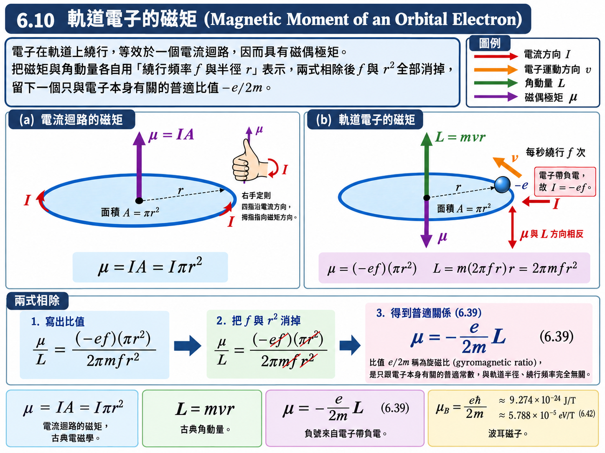
推導：磁偶極在磁場中的位能#
把磁矩從與磁場垂直（\(\theta = \pi/2\)）轉到夾角 \(\theta\)，外界所需作的功即為磁能：
\(U_m\) : 磁能 (Magnetic energy)，\([\text{J}]\)，\([\text{eV}]\)
推導：軌道電子的磁矩#
電子在軌道上繞行，等效於一個電流迴路：
同一個繞行運動的角動量為：
兩式相除，\(f\) 與 \(r^2\) 全部消掉：
負號代表磁矩與角動量方向相反（因為電子帶負電）
比值 \(\dfrac{e}{2m}\) 稱為旋磁比 (gyromagnetic ratio)，是一個只跟電子本身有關的普適常數
推導：磁能的量子化#
把 \((6.39)\) 代入 \((6.38)\)：
由【假設 1】，\(z\) 軸就是磁場方向，故 \(L\cos\theta\) 正是角動量在磁場方向的投影 \(L_z\)：
（若要用夾角的形式表達，由【已知 5】可得 \(\cos\theta = \dfrac{L_z}{L} = \dfrac{m_l}{\sqrt{l(l+1)}}\)，代入 \((6.40)\) 得到完全相同的結果。）
這就是關鍵結論： 沒有磁場時能量與 \(m_l\) 無關（簡併）；加了磁場之後，不同的 \(m_l\) 得到不同的磁能，簡併被打破。而且注意 \(m_l\) 可正可負，故磁能可能是增加、也可能是減少。
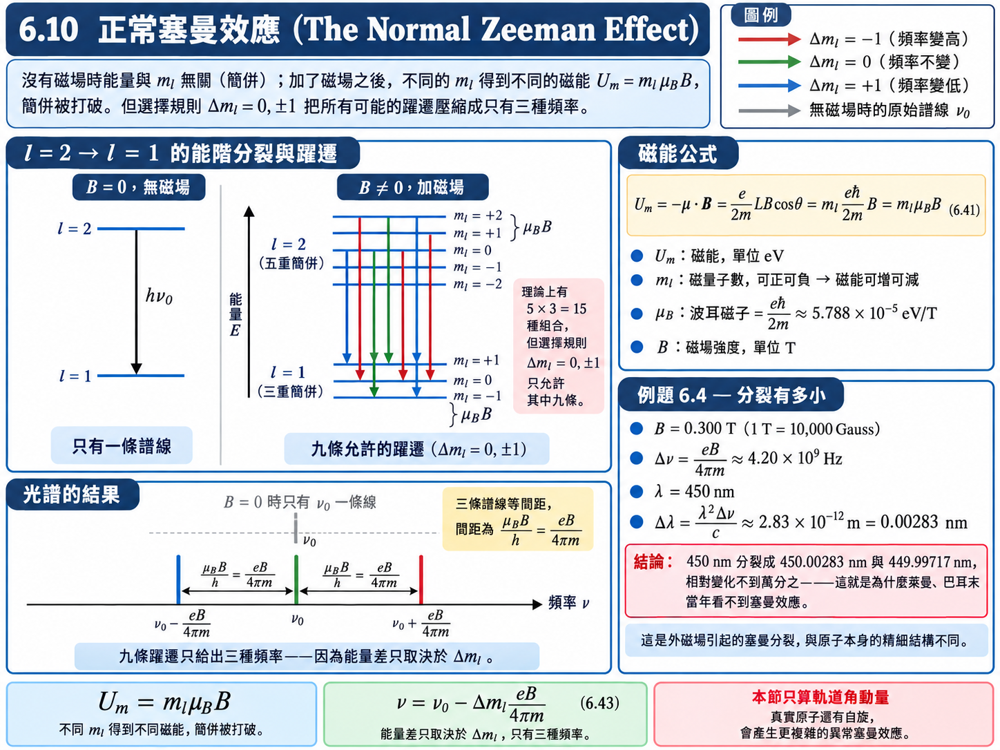
推導：一條譜線分裂成三條#
考慮 \(l = 2 \to l = 1\) 的躍遷（滿足【已知 6】的 \(\Delta l = -1\)）。加磁場前，\(l = 2\) 與 \(l = 1\) 各自只有一個能量，躍遷只給出一條譜線 \(h\nu_0\)。
加磁場後：
\(l = 2\) 的能階依 \(m_l = -2, -1, 0, 1, 2\) 分裂成五條
\(l = 1\) 的能階依 \(m_l = -1, 0, 1\) 分裂成三條
理論上有 \(5 \times 3 = 15\) 種躍遷組合，但【已知 6】限制 \(\Delta m_l = 0, \pm 1\)，且由 \((6.41)\) 躍遷放出的能量只取決於 \(\Delta m_l\)：
因此不論 15 種組合怎麼配，最後只會出現三種頻率：
\(\Delta m_l\) |
頻率 |
|---|---|
\(+1\) |
\(\nu_0 - \dfrac{eB}{4\pi m}\) |
\(0\) |
\(\nu_0\) |
\(-1\) |
\(\nu_0 + \dfrac{eB}{4\pi m}\) |
一條譜線分裂成三條——這就是正常塞曼效應 (Normal Zeeman effect)。
例題 6.4：塞曼分裂的大小#
題目： 某元素的樣本放置於 \(0.300 \ \text{T}\)（特斯拉，\(1 \ \text{T} = 10{,}000 \ \text{Gauss}\)）的磁場中而被適當地激發，此元素 \(450 \ \text{nm}\) 光譜線的塞曼成份距離多遠？
解答：
由 \((6.43)\)，相鄰塞曼成份的頻率間隔為
再把頻率間隔換算成波長間隔。由 \(\nu = c/\lambda\) 微分：
代入數值：
【物理知識回顧】 這個數字非常小：\(450 \ \text{nm}\) 的譜線分裂成 \(450.00283 \ \text{nm}\) 與 \(449.99717 \ \text{nm}\)，相對變化量不到萬分之一。
這也回答了一個歷史問題：為什麼萊曼、巴耳末當年沒有發現塞曼效應？ 因為當時光譜儀的解析度根本看不到這麼細微的分裂。這裡是外加磁場造成的塞曼分裂；下一章的精細結構 (fine structure) 則涉及相對論與自旋相關修正，兩者不應只因分裂很小就混為一談。
順帶一提，本節講的是「正常」塞曼效應——之所以叫正常，是因為它只用到軌道角動量。真實原子還有電子自旋，會產生更複雜的「異常塞曼效應」，那要等到考慮自旋之後才能處理。
本章總結
我們從一條薛丁格方程式出發，換到球座標、做兩次變數分離、解三條本徵方程式，得到三個量子數 \(n\)、\(l\)、\(m_l\)，然後：
\(n\) 給出能量量子化 \(E_n = E_1/n^2\)，重現了波耳的結果，但不需要任何假設
\(l\) 給出角動量量子化 \(L = \sqrt{l(l+1)}\hbar\)，並解釋了化學裡的 \(s, p, d, f\) 軌域
\(m_l\) 給出角動量的空間量子化 \(L_z = m_l\hbar\)，並在磁場中造成塞曼分裂
波函數的位置期望值解釋了為什麼躍遷會放光，以及什麼時候不會放光（選擇規則）
換句話說，你以前在化學課背的原子軌域，其實就是解這條微分方程式的結果。